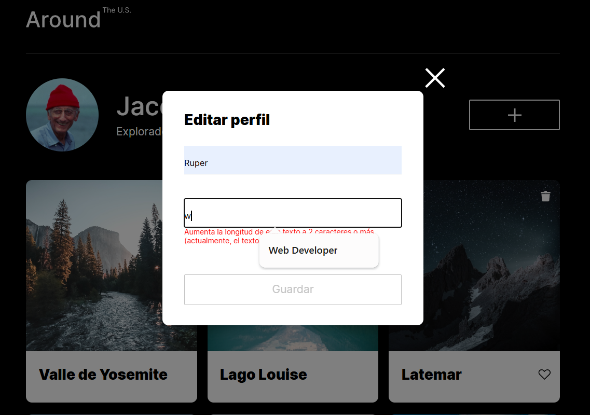

01 / Aplicación web interactiva
Around The U.S.
Adapté la gestión de datos locales para consumir una API REST: carga asíncrona de perfil y tarjetas, creación y eliminación de contenido, likes persistentes y edición de perfil y avatar.
Utilicé módulos ES, fetch, async/await y Promise.all, con validación de respuestas HTTP, manejo de errores y renderizado dinámico de tarjetas.
Ver código en GitHub